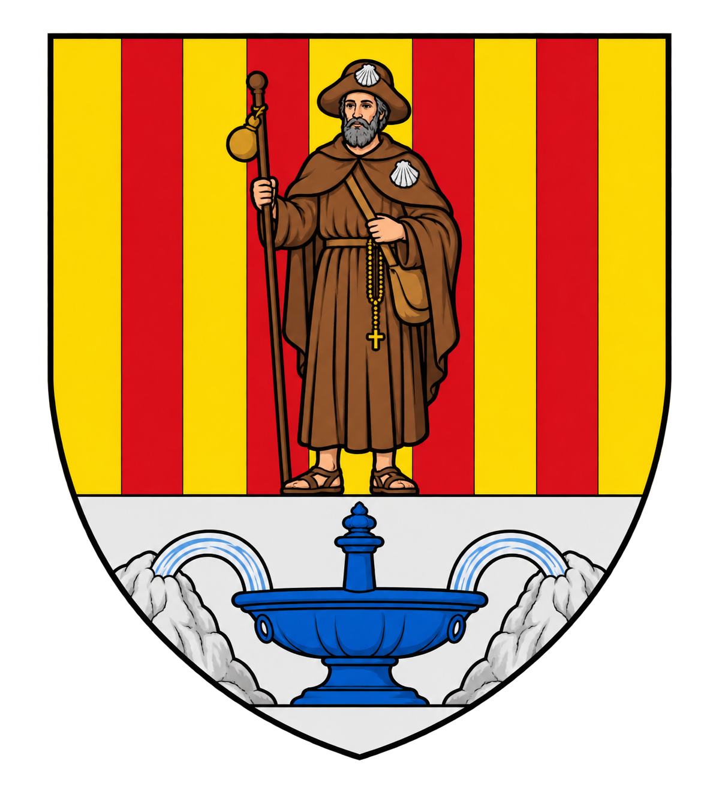
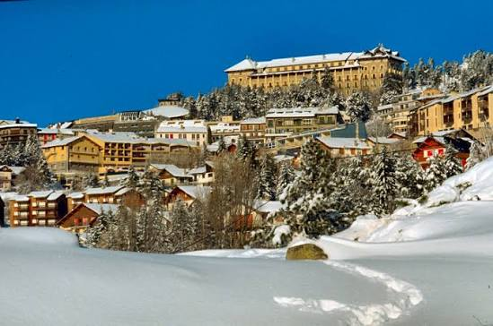
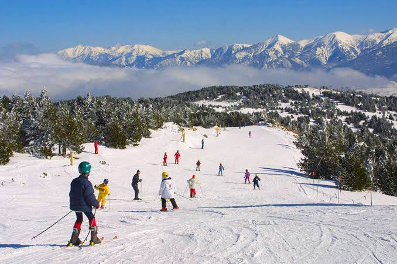

Font-Romeu
Odeillo-Via


⟹ Soleil de Cerdagne · Montagne · Sport & science ⟸

Aux origines : Odeillo et Via. Bien avant la naissance de la station, le territoire s'organise autour des villages montagnards d'Odeillo et de Via, sur le haut plateau de Cerdagne. Agriculture, élevage et pastoralisme structurent pendant des siècles la vie de ces communautés catalanes. Leurs églises anciennes et leurs maisons de pierre rappellent encore aujourd'hui cette histoire rurale.
Font-Romeu, la « fontaine du pèlerin ». Le nom vient traditionnellement du catalan font, la fontaine, et romeu, le pèlerin. Le lieu se développe autour de la dévotion à Notre-Dame de Font-Romeu. Une chapelle est attestée au XVIe siècle ; le sanctuaire et son hôtellerie sont ensuite agrandis pour recevoir les pèlerins venus honorer la Vierge et la source associée au site.
L'Ermitage, cœur spirituel. La chapelle actuelle conserve un remarquable décor baroque catalan. Son retable majeur, réalisé au début du XVIIIe siècle par Joseph Sunyer puis doré et peint, et son célèbre Camaril comptent parmi les trésors religieux de Cerdagne. Chaque année, l'Aplec de septembre perpétue l'attachement populaire à Notre-Dame de Font-Romeu.

Le Train Jaune ouvre la montagne. Au début du XXe siècle, la ligne de Cerdagne transforme l'accessibilité du plateau. Le célèbre Train Jaune relie les hautes terres catalanes à la vallée de la Têt et facilite l'arrivée des voyageurs. Cette révolution ferroviaire accompagne directement la naissance de Font-Romeu comme destination touristique.
1913 : l'âge du Grand Hôtel. Construit à l'initiative de la Société des Chemins de fer et Hôtels de Montagne, le Grand Hôtel devient le symbole de la nouvelle station climatique. Palace spectaculaire au milieu des sapins, il attire après la Première Guerre mondiale une clientèle internationale et mondaine. Sports, promenades, cure d'air et villégiature installent durablement la réputation de Font-Romeu.
Une station pionnière des sports d'hiver. Ski, luge, patinage et bobsleigh apparaissent très tôt dans l'offre de loisirs. Les premières pistes puis les remontées mécaniques transforment progressivement Font-Romeu en grande station pyrénéenne. Son ensoleillement et son altitude permettent d'associer tourisme d'hiver, séjours estivaux et climatisme.
1967 : la haute altitude au service des champions. À l'approche des Jeux olympiques de Mexico de 1968, la France choisit Font-Romeu pour créer un centre d'entraînement en altitude. Le complexe conçu par Roger Taillibert est inauguré en 1967. Devenu Centre national d'entraînement en altitude, il accueille depuis lors des générations d'athlètes français et internationaux.

Odeillo, capitale du soleil scientifique. À proximité du village s'élève le spectaculaire Grand Four Solaire d'Odeillo. Mis en service à la fin des années 1960, il utilise un vaste champ d'héliostats et un immense miroir parabolique pour concentrer le rayonnement solaire. Aujourd'hui laboratoire PROMES du CNRS, il fait de Font-Romeu-Odeillo-Via un haut lieu international de la recherche sur l'énergie solaire et les hautes températures.
Un patrimoine exceptionnellement varié. La commune réunit patrimoine roman, baroque, ferroviaire, climatique, scientifique et sportif. Six édifices ou ensembles sont protégés au titre des Monuments historiques, parmi lesquels les églises d'Odeillo et de Via, l'Ermitage, le Grand Hôtel, le Four solaire et les maisons solaires Trombe-Michel.
Font-Romeu aujourd'hui. La commune conjugue trois identités complémentaires : les racines catalanes d'Odeillo et de Via, la station de montagne née au XXe siècle et un pôle scientifique et sportif de premier plan. Forêts, panoramas sur la Cerdagne, ski, randonnée, patrimoine et recherche solaire composent un visage unique dans les Pyrénées françaises.
Pour approfondir : Office de Tourisme — Patrimoine · Mairie — Patrimoine culturel · CNEA — Historique.
Félix Trombe, chimiste et physicien, est indissociable de l'aventure solaire des Pyrénées-Orientales. Ses travaux ont contribué au développement des fours solaires français et son nom demeure attaché à la recherche menée à Odeillo.
Roger Taillibert, architecte du centre préolympique inauguré en 1967, a donné au complexe sportif sa forme caractéristique, pensée pour réunir hébergement, entraînement et suivi médical dans un même ensemble.
Font-Romeu est aussi liée à la mémoire de très nombreux champions français et internationaux. Le centre d'altitude a servi de lieu de préparation à des générations d'athlètes, tandis que la station a accueilli entraînements et stages dans de nombreuses disciplines.
Le Train Jaune, les pionniers du ski et les personnels du Grand Hôtel appartiennent eux aussi à la mémoire collective : ils ont participé à la transformation d'un territoire pastoral en station climatique et sportive de renommée nationale.
Accès : Font-Romeu-Odeillo-Via est accessible par la route depuis Perpignan via la vallée de la Têt et Mont-Louis. La gare de Font-Romeu-Odeillo-Via est desservie par le Train Jaune ; elle se situe en contrebas de la station.
Office de tourisme : 43 avenue Emmanuel Brousse, 66120 Font-Romeu-Odeillo-Via — tél. +33 4 68 30 68 30. Site de l'Office de Tourisme.
À savoir : le Grand Four Solaire est un laboratoire de recherche et non une centrale de production électrique. En 2026, l'exposition intérieure est annoncée fermée ; les extérieurs restent accessibles avec des panneaux d'information.
En saison : ski alpin et nordique, raquettes et activités de neige en hiver ; randonnée, VTT, patrimoine, golf et activités de pleine nature aux beaux jours. Les conditions d'ouverture des sites et équipements sont à vérifier avant la visite.